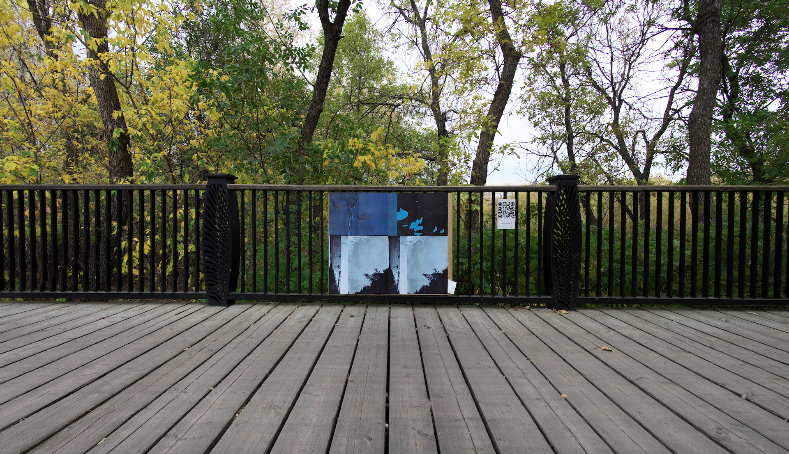

Shimmering
send + receive Festival
Stephen Juba Park
Winnipeg, Manitoba
September 28 – October 28, 2023
Site-specific audio installation commissioned by send + receive.
Presented beneath the pedestrian bridge commemorating the former Ross Creek.
Documentation by Robert Szkolnicki, courtesy of send + receive Festival of Sound.
Shimmering is an aural painting that interprets the cycles of our lives, the phases of the moon, and the flow of waterways that have been redirected by human intervention. It attempts to find patterns between these seemingly separate entities, and to identify the monuments that signify beginnings and endings.
Shimmering is composed of original field recordings from bodies of water that are connected to the Red and Assiniboine river systems, audio samples combed from the expanse of the internet, manipulated voice recordings and performances, text to speech generated verses, and the sounds of chains, skid steers, and wind chimes. Responding specifically to the site of the installation, Shimmering acts as a sounding board for the ghostly echo of Ross Creek.
